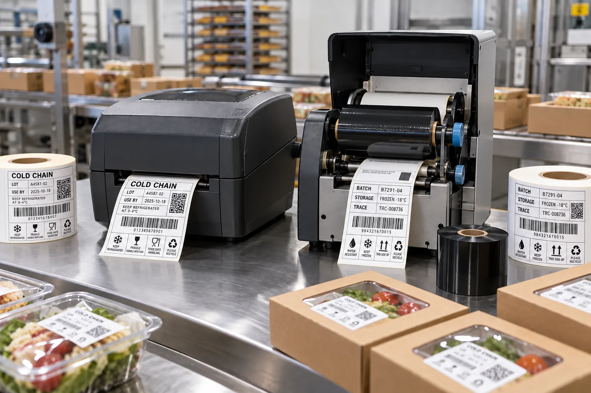

Short answer
Choose direct thermal for short-life, simple variable data; choose thermal transfer when the print must survive longer, resist handling or remain reliably scannable. The correct choice depends on service life, heat, light, moisture, abrasion and the label material.
The purchase price of the printer is rarely the whole decision. Direct thermal removes the ribbon from daily work. Thermal transfer adds a consumable, but buys a wider range of durable print outcomes. One saves steps. The other saves reprints.
How the two methods create an image
| Factor | Direct thermal | Thermal transfer |
|---|---|---|
| Image source | Heat-sensitive label coating darkens | Heated printhead transfers ribbon material |
| Ribbon | Not required | Required |
| Typical strength | Simple operation and short-term coding | Durability and broad material choice |
| Main risk | Heat, light or abrasion can degrade the image | Wrong ribbon and face-stock pairing reduces performance |
Avery's technical overview describes direct thermal as heat-sensitive media and thermal transfer as a ribbon-based process for more durable images. Zebra also uses a simple scratch test: direct thermal stock generally creates a dark mark when friction heats the surface. These definitions are useful, but your package still decides the specification.
Two typical buyers, two correct answers
First composite scenario: a bakery prints same-day use-by labels for trays that leave the store within hours. The team wants fewer consumables and quick operator training. Direct thermal has a clean win. Paying for long-term image durability would solve a problem the package does not have.
Second scenario: a frozen-food co-packer prints lot codes and barcodes that must survive months of storage, carton friction and temperature changes. Thermal transfer is the more defensible route. The operator has to manage ribbon, but the buyer is not really purchasing ribbon-free convenience; they are purchasing readable traceability.
Print durability and label adhesion are separate
This distinction causes expensive confusion. Thermal transfer can produce a durable image on a film label, but that film still needs the correct adhesive for a cold, wet or difficult package. Direct thermal stock can print perfectly and still peel because it was applied to a damp tray.
- Print method controls how the variable image is created.
- Face material controls moisture, tear and surface behavior.
- Adhesive controls the bond to the package.
- Roll construction controls whether the media runs through the printer.
What to confirm before buying blank thermal rolls
| Specification | Why it matters |
|---|---|
| Printer make and model | Controls media width, sensing and roll limits |
| Direct thermal or thermal transfer mode | Determines media and ribbon requirement |
| Label size, gap and core | Affects feeding and detection |
| Ribbon type and width | Must match label face and durability target |
| Service life and environment | Separates temporary coding from long-term identification |
Our view
Do not buy a durable printer and feed it a vague specification
I have seen teams spend attention on printer resolution, then order rolls without confirming gap, core, winding or ribbon compatibility. The printer gets blamed because it is the expensive object on the table.
Machines are honest. They expose missing specifications quickly.
A practical proof test
Print the smallest barcode, lot code and date format you expect to use. Scan it immediately, after rubbing, after storage and after exposure to the expected temperature. Keep the approved printer settings and ribbon reference with the label specification so the next roll is not a new experiment.
For variable information planning, read Date Code and Lot Number Labels and Barcode and QR Code Labels. For machine-ready rolls, use the Label Roll Direction Guide.
Frequently asked questions
What is the main difference between direct thermal and thermal transfer?
Direct thermal activates a heat-sensitive label surface and uses no ribbon. Thermal transfer melts ink from a ribbon onto the label, which usually supports longer-lasting and more durable printing.
Can direct thermal labels be used on food packaging?
Yes, especially for short-life labels such as weigh-scale, dispatch or rotation labels. Heat, light, abrasion and required service life should be reviewed before using them as long-term product identification.
Which method is better for freezer labels?
Thermal transfer is often the safer starting point for durable cold-storage identification, but the ribbon, face material and adhesive must be matched. A durable print does not compensate for the wrong freezer adhesive.
Do thermal transfer labels always need a ribbon?
Yes. Thermal transfer printing uses a ribbon. The ribbon chemistry and label face must be compatible to achieve the expected print quality and resistance.
Related label guides
- Labels for HDPE and PP Containers: Adhesive Guide
- Hot Foil vs Cold Foil vs Metallic Ink Labels
- Wash-Off Labels for PET Recycling: Buyer Guide
Review the complete label construction
Send the package photos, material, finished label size, quantity by artwork, storage conditions and application method. We can review fit, material and production details before preparing a quote and digital proof.